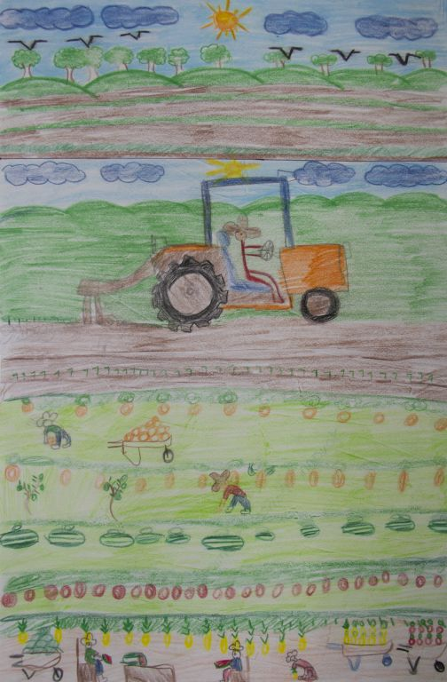
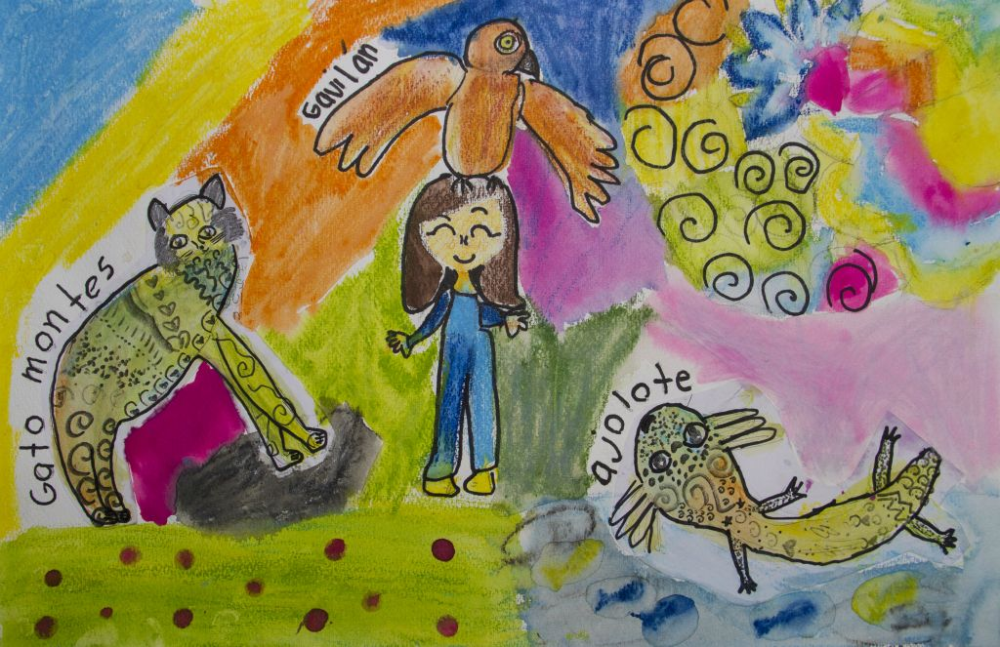

Cardenal en cactus Matías Fajardo Becerra - 8 años - CDMX
Los ecosistemas donde vivo Azael Cortez Silva - 7 años - Puebla
Las garzas Leonardo Bernal Pérez - 9 años - Quintana Roo
Démosle una mano José Alfredo Farelos Ovando - 9 años - Chiapas
El pez león no es amigo Alejandro de Jesús Lobiera Gómez - 9 años - Oaxaca
Nos alimentamos de la naturaleza Yovanni Baños Sarmiento - 9 años - Oaxaca
Salven la selva Yael Chamorro Saldaña - 6 años - Tlaxcala
Mi barranca Iker Cariat Amacende Rosas - 8 años - Morelos
Los ecosistemas Axel Martínez Ramírez - 9 años - Oaxaca
Nuestras raíces, el campo Sophie García Jiménez - 8 años - Estado de México
Mi ecosistema Yuritzi Yoseline Alvarado Álvarez - 6 años - Nayarit
Salvemos a Xólotl Lía Seleisha Brito Lugo - 9 años - Morelos
Sin título Ollin García Tapia - 8 años - CDMX
Fuerza en el corazón Lucianna Gordón García - 6 años - CDMX
Los ecosistemas donde vivo Jazmín Cruz Martínez - 9 años - Querétaro